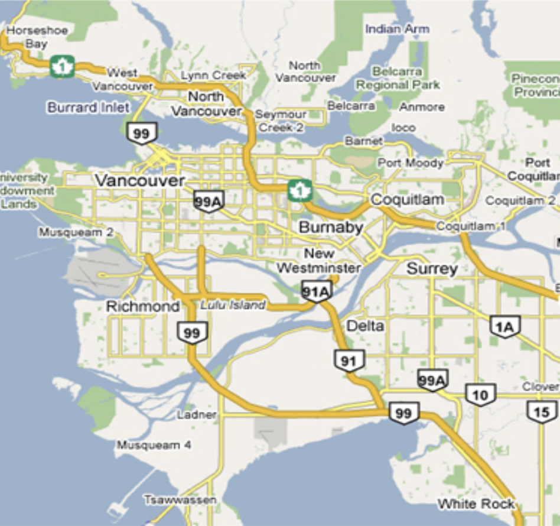
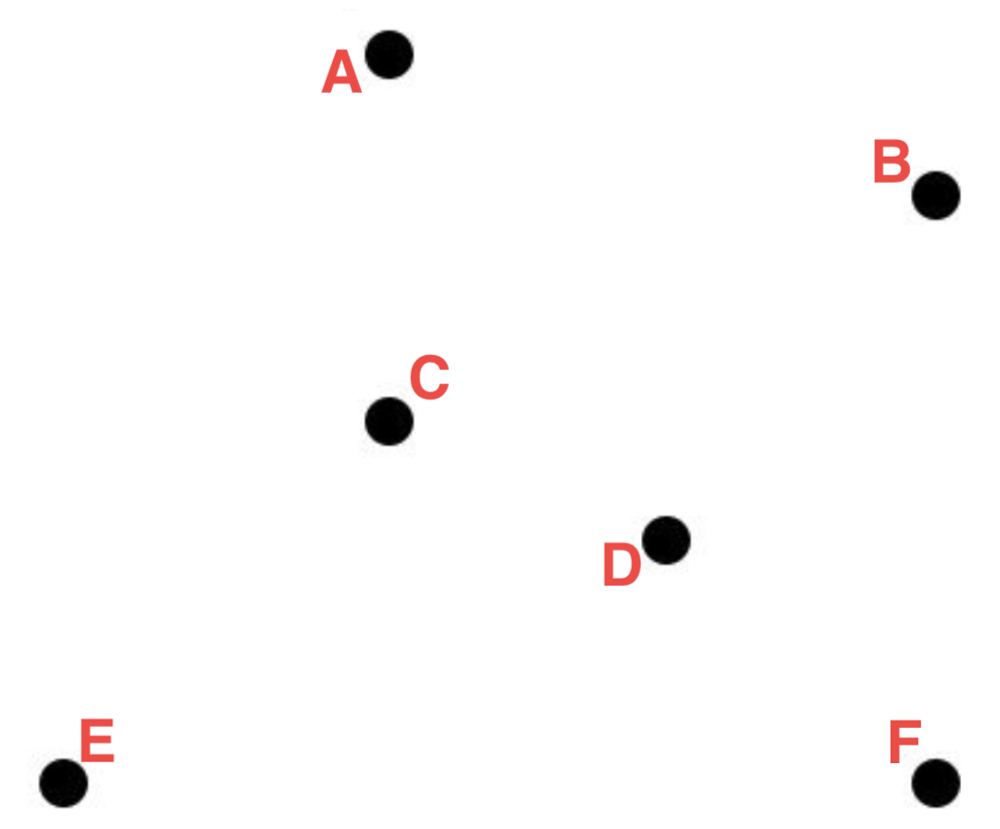
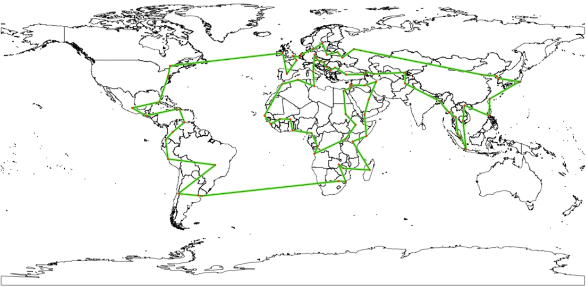
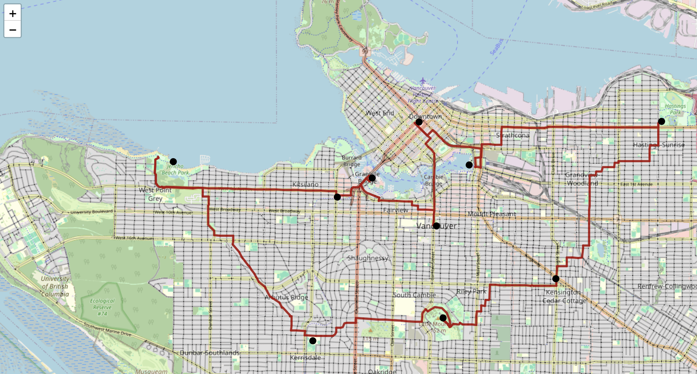

CPSC 203, 2026 W1
November 24, 2026


“Given a list of cities, and the distances between each pair of cities, what is the shortest possible route that visits each city exactly once and returns to the origin city?”
Possible solutions
https://medium.com/data-science/around-the-world-in-90-414-kilometers-ce84c03b8552

There are lots of applications:
Steps to assemble our solution:

Consider some Vancouver landmarks:
How do we find it? SSSP!
How should we store it? Many possible options…
For a collection of items, find all possible ordering permutations.
| ABCD | ABDC | ACBD | ACDB | ADBC | ADCB |
| BACD | BADC | BCAD | BCDA | BDAC | BDCA |
| CABD | CADB | CBAD | CBDA | CDAB | CDBA |
| DABC | DACB | DBAC | DBCA | DCAB | DCBA |
Fortunately, Python has a function for that:
Consider the example tour [A,D,B,E,F,C]
What pairs of locations will we consider for a given order?
How do we find the total distance if we do the errands in the suggested order?
gdfGoal: Create a new column latlong containing coordinates for each errand in the dataframe.
df.apply(..., axis=1): Run a function once for each row to create a new series.
lambda row: ox.geocode(row['errand']): An anonymous function.
row['errand'], geocode it, and return the (lat, lon).dferrands['latlong'] = ...: Assign the returned series as a new column named latlong.
Why lambda? We only need this function once, so we write it inline.
Launch Class Activity: Traveling Salesperson in PrairieLearn.
You will complete four functions:
compute_pairwise(G, nodes): build a table of driving distances between every pair of errand locations.tourlength(tour, dfdist): compute the total round-trip distance for a given visit order.find_best_tour(tours, dfdist): search all permutations and return the shortest tour.assemble_route(tour, dfdict): stitch together the full turn-by-turn road sequence using pre-computed paths.| Aspect | SSSP (Single-Source Shortest Paths) | TSP (Travelling Salesperson) |
|---|---|---|
| Goal | Shortest route from one source vertex to every other vertex | One cheapest tour visiting all vertices and returning |
| Shape | Tree of paths from the source | Cycle through all vertices |
| Must visit all? | No – each path can skip most vertices | Yes – must visit every vertex exactly once |
| Overlap | Paths often share edges | Tour is one path (which might backtrack) |
| Difficulty | Fast exact algorithms exist (such as Dijkstra) | NP-hard; exact solution is hard for large graphs |